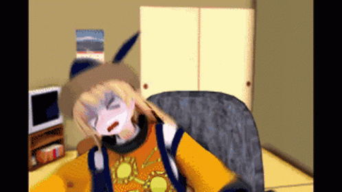

Here are top 5 reason why you should play Touhou
1.Touhou is a good franchise
The Touhou Project (東方Project), also 東方プロジェクト (Touhou Purojekuto) or Project Shrine Maiden, is a Japanese doujin game series that specialises in shoot 'em ups by sole Team Shanghai Alice member ZUN. Generally, it's a series of 2D (with 3D background) vertically-scrolling danmaku shooting games, that also creates related print works and music CDs. There are also six fighting game spinoffs co-produced with Twilight Frontier, called "danmaku action games." The works of Touhou Project are sometimes called the Touhou Series (東方シリーズ Tōhō shirīzu) for convenience.
The Guinness World Records named the Touhou Project as the "world's most prolific fan-made shooter series."


2.Touhou have many characters
The game is also known for it casts. With so many characters that you can make into you waifu, ranging from Rinnosuke, Youki Konpaku, Genji, etc...
3.Touhou is just Touhou
Nothing can go wrong with playing a shoot 'em ups game.
4.I'm out of reason
Bruh, just play the game
one of the best Touhou animation series!!!